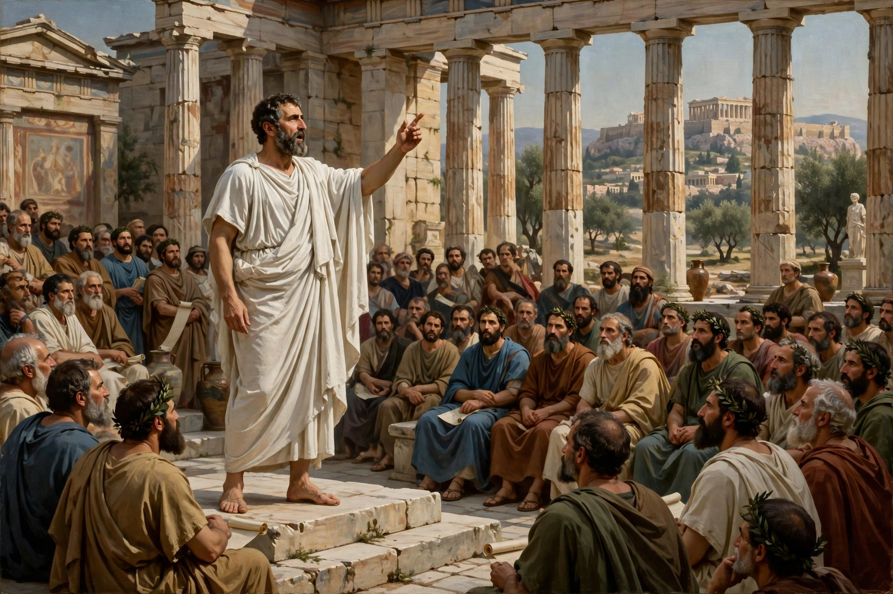

Rhetoric is the art of persuasion. It is one of the three ancient arts of discourse (trivium) along with grammar and logic/dialectic. As an academic discipline within the humanities, rhetoric aims to study the techniques that speakers or writers use to inform, persuade, and motivate their audiences.

Rhetoric originated in ancient Mesopotamia and Egypt but was formalised in ancient Greece, where teachers known as Sophists offered instruction in public speaking. Plato criticised rhetoric as mere flattery in dialogues such as the Gorgias, while his student Aristotle systematised it in his treatise Rhetoric, defining it as "the faculty of observing in any given case the available means of persuasion." Roman orators such as Cicero and Quintilian further developed rhetorical education, which remained central through the Middle Ages and Renaissance as part of the trivium.
Aristotle identified three artistic proofs: ethos (the character and credibility of the speaker), pathos (appeal to the audience's emotions), and logos (appeal to logic and evidence). He also divided oratory into deliberative (political), judicial (forensic), and epideictic (ceremonial) genres.
Classical rhetoric divided the art into five canons: invention (inventio), arrangement (dispositio), style (elocutio), memory (memoria), and delivery (pronuntiatio).
In the 20th century rhetoric expanded beyond public address to the study of all symbolic communication, including visual and digital rhetoric, composition studies, and the work of theorists such as Kenneth Burke and Chaim Perelman.